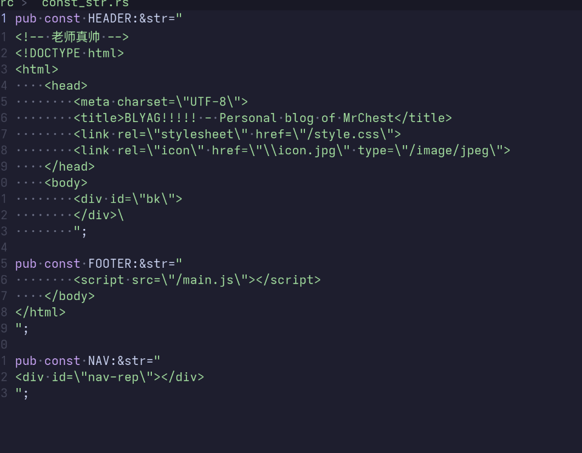
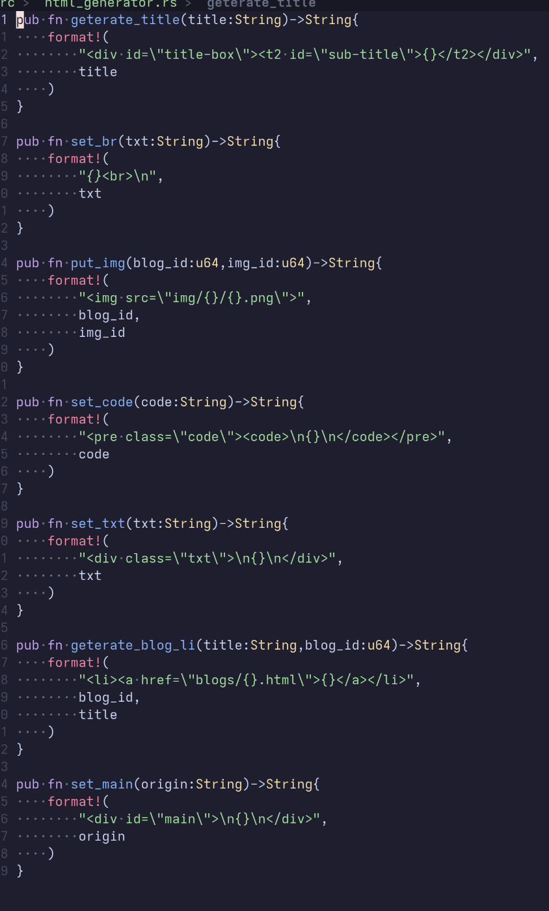
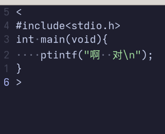
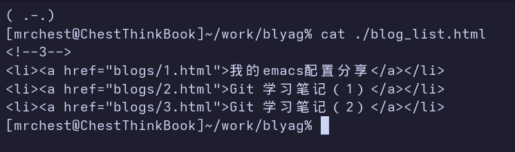
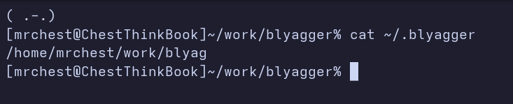
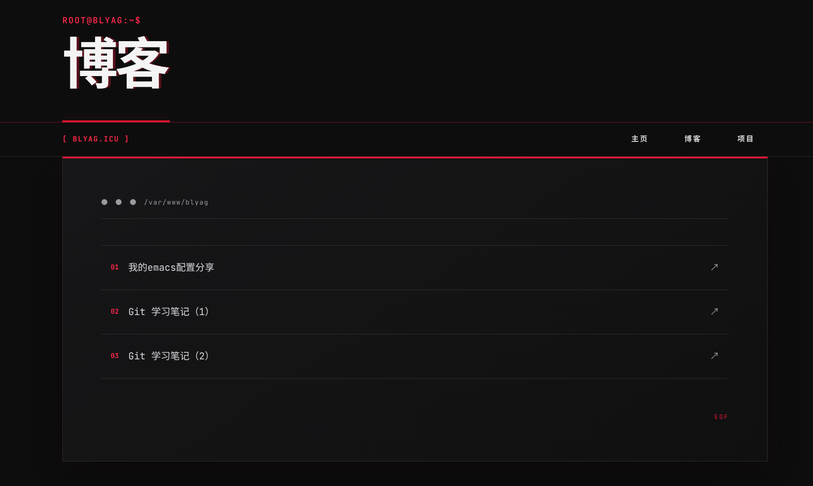

几天前 我试着建立了自己的个人技术博客网站：blyag.icu
由于前端完全是自学的 学了个半调子 所以也不会什么vue，react 之类的 只会那这html css和js手搓静态网站 再加上本人穷学生一个 根本租不起服务器 这个网站自然也只能部署在github pages
从软件工程的角度 这个网站的可维护性无疑是炸裂的 每次有新的博客要上传 我都必须打开emacs 手动新加html页面 更改目录 然后push
最麻烦的还是每次换行都要手写<br> 即使装了插件 这个过程也没好到哪里去
于是我想 我也发不出什么高级东西 每篇博客就只有标题 文本 代码 图片 根本不会每次去大改html页面的结构 那我为什么不能写在txt里面 然后自动生成呢
然后。。。
由于前端完全是自学的 学了个半调子 所以也不会什么vue，react 之类的 只会那这html css和js手搓静态网站 再加上本人穷学生一个 根本租不起服务器 这个网站自然也只能部署在github pages
从软件工程的角度 这个网站的可维护性无疑是炸裂的 每次有新的博客要上传 我都必须打开emacs 手动新加html页面 更改目录 然后push
最麻烦的还是每次换行都要手写<br> 即使装了插件 这个过程也没好到哪里去
于是我想 我也发不出什么高级东西 每篇博客就只有标题 文本 代码 图片 根本不会每次去大改html页面的结构 那我为什么不能写在txt里面 然后自动生成呢
然后。。。
今天 我本可以去学学高数 打打游戏 或者哪怕出去溜达呢
但是我选择了在这里坐牢
首先是定义一些常量吧 这些东西是每一篇html都有的重复内容

接下来是一些 只需要改一两处地方的html语句

接下来我简单设计了一下语法
首先这个txt必须叫做origin.txt 同目录下必须有img目录
txt的第一行会被视作标题
接下来 代码会被“<”和“>”框起来 就像：

图片就直接用@代替
第一个@会被替换为img里面的1.png 第二个会被替换为2.png 以此类推
然后在blyag这里 blog目录被单独放在了一个文件：

这个文件是会被blyagger修改的 最上面那个注释表示目前已经有几篇blog了
blyagger首先读取这个数字 用于生成html和图片目录的名字 最后将新文章加入这个地方 并修改注释
然后规定在~/.blyagger文件里面 写着blyag网页本身git repo的目录

于是 当我们按照规矩 编辑好网站后 只要blyagger ./xxx
程序就会自动把txt转换成html 连带着图片 放入blyag repo正确的位置 修改blog_list.html
自动git add . git commit -m "xxx" git push
最后不出意外就部署成功了

当然了 我知道专业的web开发者肯定觉得这不像话
首先是格式不够灵活 如果以后需求超过了文本 图片和代码怎么办
而且这个东西和网站本身耦合度太高了 想要一直给其他网站用要改很多常量
不过我应该还是会凑合用吧 反正我这博客也没人看～
仓库地址：https://github.com/nuistMrChest/blyagger.git
轻喷